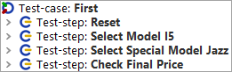
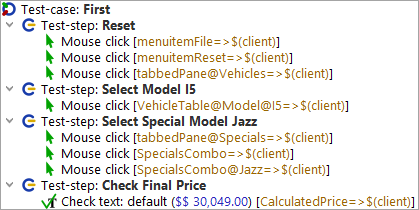
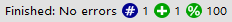

| Version 6.0.3 |
Let's check out now what test-case "First" contains. There are four test-steps inside:
|
|  | ||
|
| Figure 19.6: The "First" Test-case | ||
Reset - performs a reset by use of the File->Reset menu action and
a selection of the Vehicles tab.
Select Model I5 - chooses the last model I5 within the vehicles
table.
Select Special Model Jazz - switches to the Specials tab and
selects the Jazz option.
Check Final Price - checks that the
calculated final price field located at bottom right equals a given value.
Test-steps are used to group the nodes and to document what is being done. This will prove very useful when it comes to error analysis or test adaptations.
|
|  | ||
|
| Figure 19.7: Details of the first Test-case | ||
You can see Mouse clicks and Checks, which have been grouped in test-step nodes for better readability of the test-case. The action nodes display the action type (Mouse click, Check, ...) and the component targeted, i.e. where the action goes to. When writing a test you can use the QF-Test recording function to create them. Recording will be explained in the next chapter 20.
The test-steps will then be replayed in the SUT.
The test result is indicated during and after the test run in the status line at the bottom of the QF-Test main window and should read now 'Finished: No errors'. Next to it there are counters for the numbers and results of the test-cases executed. In our case it was just one, error-free, which means a success rate of 100%.
|
|  | ||
|
| Figure 19.8: The result view in the status line | ||
Each counter icon has a descriptive tool tip. A list of all counters can be found in the chapter 'Capture and replay' of the manual.
| Last update: 9/6/2022 Copyright © 2002-2022 Quality First Software GmbH |